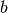
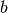
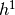

Convolutional Neural Networks (LeNet)¶
Note
This section assumes the reader has already read through Classifying MNIST digits using Logistic Regression and Multilayer Perceptron. Additionally, it uses the following new Theano functions and concepts: T.tanh, shared variables, basic arithmetic ops, T.grad, floatX, downsample , conv2d, dimshuffle. If you intend to run the code on GPU also read GPU.
Note
The code for this section is available for download here.
Motivation¶
Convolutional Neural Networks (CNN) are variants of MLPs which are inspired from biology. From Hubel and Wiesel’s early work on the cat’s visual cortex [Hubel68], we know there exists a complex arrangement of cells within the visual cortex. These cells are sensitive to small sub-regions of the input space, called a receptive field, and are tiled in such a way as to cover the entire visual field. These filters are local in input space and are thus better suited to exploit the strong spatially local correlation present in natural images.
Additionally, two basic cell types have been identified: simple cells (S) and complex cells (C). Simple cells (S) respond maximally to specific edge-like stimulus patterns within their receptive field. Complex cells (C) have larger receptive fields and are locally invariant to the exact position of the stimulus.
The visual cortex being the most powerful “vision” system in existence, it seems natural to emulate its behavior. Many such neurally inspired models can be found in the litterature. To name a few: the NeoCognitron [Fukushima], HMAX [Serre07] and LeNet-5 [LeCun98], which will be the focus of this tutorial.
Sparse Connectivity¶
CNNs exploit spatially local correlation by enforcing a local connectivity pattern between neurons of adjacent layers. The input hidden units in the m-th layer are connected to a local subset of units in the (m-1)-th layer, which have spatially contiguous receptive fields. We can illustrate this graphically as follows:

Imagine that layer m-1 is the input retina. In the above, units in layer m have receptive fields of width 3 with respect to the input retina and are thus only connected to 3 adjacent neurons in the layer below (the retina). Units in layer m have a similar connectivity with the layer below. We say that their receptive field with respect to the layer below is also 3, but their receptive field with respect to the input is larger (it is 5). The architecture thus confines the learnt “filters” (corresponding to the input producing the strongest response) to be a spatially local pattern (since each unit is unresponsive to variations outside of its receptive field with respect to the retina). As shown above, stacking many such layers leads to “filters” (not anymore linear) which become increasingly “global” however (i.e spanning a larger region of pixel space). For example, the unit in hidden layer m+1 can encode a non-linear feature of width 5 (in terms of pixel space).
Shared Weights¶
In CNNs, each sparse filter is additionally replicated across the entire visual field. These “replicated” units form a feature map, which share the same parametrization, i.e. the same weight vector and the same bias.

In the above figure, we show 3 hidden units belonging to the same feature map. Weights of the same color are shared, i.e. are constrained to be identical. Gradient descent can still be used to learn such shared parameters, and requires only a small change to the original algorithm. The gradient of a shared weight is simply the sum of the gradients of the parameters being shared.
Why are shared weights interesting ? Replicating units in this way allows for features to be detected regardless of their position in the visual field. Additionally, weight sharing offers a very efficient way to do this, since it greatly reduces the number of free parameters to learn. By controlling model capacity, CNNs tend to achieve better generalization on vision problems.
Details and Notation¶
Conceptually, a feature map is obtained by convolving the input image with a
linear filter, adding a bias term and then applying a non-linear function. If
we denote the k-th feature map at a given layer as  , whose filters
are determined by the weights and bias , then the
feature map is obtained as follows (for non-linearities):
, whose filters
are determined by the weights and bias , then the
feature map is obtained as follows (for non-linearities):
Note
Recall the following definition of convolution for a 1D signal. .
This can be extended to 2D as follows: .
To form a richer representation of the data, hidden layers are composed of
a set of multiple feature maps, .
The weights  of this layer can be parametrized as a 4D tensor
(destination feature map index, source feature map index, source vertical position index, source horizontal position index)
and
the biases  as a vector (one element per destination feature map index).
We illustrate this graphically as follows:
of this layer can be parametrized as a 4D tensor
(destination feature map index, source feature map index, source vertical position index, source horizontal position index)
and
the biases  as a vector (one element per destination feature map index).
We illustrate this graphically as follows:
Figure 1: example of a convolutional layer
Here, we show two layers of a CNN, containing 4 feature maps at layer (m-1) and 2 feature maps ( and ) at layer m. Pixels (neuron outputs) in and (outlined as blue and red squares) are computed from pixels of layer (m-1) which fall within their 2x2 receptive field in the layer below (shown as colored rectangles). Notice how the receptive field spans all four input feature maps. The weights and of and are thus 3D weight tensors. The leading dimension indexes the input feature maps, while the other two refer to the pixel coordinates.
Putting it all together, denotes the weight connecting each pixel of the k-th feature map at layer m, with the pixel at coordinates (i,j) of the l-th feature map of layer (m-1).
The ConvOp¶
ConvOp is the main workhorse for implementing a convolutional layer in Theano. It is meant to replicate the behaviour of scipy.signal.convolve2d. Conceptually, the ConvOp (once instantiated) takes two symbolic inputs:
- a 4D tensor corresponding to a mini-batch of input images. The shape of the tensor is as follows: [mini-batch size, number of input feature maps, image height, image width].
- a 4D tensor corresponding to the weight matrix . The shape of the
tensor is: [number of feature maps at layer m, number of feature maps at
layer m-1, filter height, filter width]
Below is the Theano code for implementing a convolutional layer similar to the one of Figure 1. The input consists of 3 features maps (an RGB color image) of size 120x160. We use two convolutional filters with 9x9 receptive fields.
from theano.tensor.nnet import conv
rng = numpy.random.RandomState(23455)
# instantiate 4D tensor for input
input = T.tensor4(name = 'input')
# initialize shared variable for weights.
w_shp = (2, 3, 9, 9)
w_bound = numpy.sqrt(3 * 9 * 9)
W = theano.shared( numpy.asarray(
rng.uniform(
low=-1.0 / w_bound,
high=1.0 / w_bound,
size=w_shp),
dtype=input.dtype),name ='W')
# initialize shared variable for bias (1D tensor) with random values
# IMPORTANT: biases are usually initialized to zero. However in this
# particular application, we simply apply the convolutional layer to
# an image without learning the parameters. We therefore initialize
# them to random values to "simulate" learning.
b_shp = (2,)
b = theano.shared( numpy.asarray(
rng.uniform(low=-.5, high=.5, size=b_shp),
dtype=input.dtype), name ='b')
# build symbolic expression that computes the convolution of input with filters in w
conv_out = conv.conv2d(input, W)
# build symbolic expression to add bias and apply activation function, i.e. produce neural net layer output
# A few words on ``dimshuffle`` :
# ``dimshuffle`` is a powerful tool in reshaping a tensor;
# what it allows you to do is to shuffle dimension around
# but also to insert new ones along which the tensor will be
# broadcastable;
# dimshuffle('x', 2, 'x', 0, 1)
# This will work on 3d tensors whith no broadcastable
# dimensions. The first dimension will be broadcastable,
# then we will have the third dimension of the input tensor as
# the second of the resulting tensor, etc. If the tensor has
# shape (20, 30, 40), the resulting tensor will have dimensions
# (1, 40, 1, 20, 30). (AxBxC tensor is mapped to 1xCx1xAxB tensor)
# More examples:
# dimshuffle('x') -> make a 0d (scalar) into a 1d vector
# dimshuffle(0, 1) -> identity
# dimshuffle(1, 0) -> inverts the first and second dimensions
# dimshuffle('x', 0) -> make a row out of a 1d vector (N to 1xN)
# dimshuffle(0, 'x') -> make a column out of a 1d vector (N to Nx1)
# dimshuffle(2, 0, 1) -> AxBxC to CxAxB
# dimshuffle(0, 'x', 1) -> AxB to Ax1xB
# dimshuffle(1, 'x', 0) -> AxB to Bx1xA
output = T.nnet.sigmoid(conv_out + b.dimshuffle('x', 0, 'x', 'x'))
# create theano function to compute filtered images
f = theano.function([input], output)
Let’s have a little bit of fun with this...
import pylab
from PIL import Image
# open random image of dimensions 639x516
img = Image.open(open('images/3wolfmoon.jpg'))
img = numpy.asarray(img, dtype='float64')/256.
# put image in 4D tensor of shape (1,3,height,width)
img_ = img.swapaxes(0,2).swapaxes(1,2).reshape(1,3,639,516)
filtered_img = f(img_)
# plot original image and first and second components of output
pylab.subplot(1,3,1); pylab.axis('off'); pylab.imshow(img)
pylab.gray();
# recall that the convOp output (filtered image) is actually a "minibatch",
# of size 1 here, so we take index 0 in the first dimension:
pylab.subplot(1,3,2); pylab.axis('off'); pylab.imshow(filtered_img[0,0,:,:])
pylab.subplot(1,3,3); pylab.axis('off'); pylab.imshow(filtered_img[0,1,:,:])
pylab.show()
This should generate the following output.

Notice that a randomly initialized filter acts very much like an edge detector!
Also of note, remark that we use the same weight initialization formula as with the MLP. Weights are sampled randomly from a uniform distribution in the range [-1/fan-in, 1/fan-in], where fan-in is the number of inputs to a hidden unit. For MLPs, this was the number of units in the layer below. For CNNs however, we have to take into account the number of input feature maps and the size of the receptive fields.
MaxPooling¶
Another important concept of CNNs is that of max-pooling, which is a form of non-linear down-sampling. Max-pooling partitions the input image into a set of non-overlapping rectangles and, for each such sub-region, outputs the maximum value.
Max-pooling is useful in vision for two reasons: (1) it reduces the computational complexity for upper layers and (2) it provides a form of translation invariance. To understand the invariance argument, imagine cascading a max-pooling layer with a convolutional layer. There are 8 directions in which one can translate the input image by a single pixel. If max-pooling is done over a 2x2 region, 3 out of these 8 possible configurations will produce exactly the same output at the convolutional layer. For max-pooling over a 3x3 window, this jumps to 5/8.
Since it provides additional robustness to position, max-pooling is thus a “smart” way of reducing the dimensionality of intermediate representations.
Max-pooling is done in Theano by way of theano.tensor.signal.downsample.max_pool_2d. This function takes as input an N dimensional tensor (with N >= 2), a downscaling factor and performs max-pooling over the 2 trailing dimensions of the tensor.
An example is worth a thousand words:
from theano.tensor.signal import downsample
input = T.dtensor4('input')
maxpool_shape = (2,2)
pool_out = downsample.max_pool_2d(input, maxpool_shape, ignore_border=True)
f = theano.function([input],pool_out)
invals = numpy.random.RandomState(1).rand(3,2,5,5)
print 'With ignore_border set to True:'
print 'invals[0,0,:,:] =\n', invals[0,0,:,:]
print 'output[0,0,:,:] =\n', f(invals)[0,0,:,:]
pool_out = downsample.max_pool_2d(input, maxpool_shape, ignore_border=False)
f = theano.function([input],pool_out)
print 'With ignore_border set to False:'
print 'invals[1,0,:,:] =\n ', invals[1,0,:,:]
print 'output[1,0,:,:] =\n ', f(invals)[1,0,:,:]
This should generate the following output:
With ignore_border set to True:
invals[0,0,:,:] =
[[ 4.17022005e-01 7.20324493e-01 1.14374817e-04 3.02332573e-01 1.46755891e-01]
[ 9.23385948e-02 1.86260211e-01 3.45560727e-01 3.96767474e-01 5.38816734e-01]
[ 4.19194514e-01 6.85219500e-01 2.04452250e-01 8.78117436e-01 2.73875932e-02]
[ 6.70467510e-01 4.17304802e-01 5.58689828e-01 1.40386939e-01 1.98101489e-01]
[ 8.00744569e-01 9.68261576e-01 3.13424178e-01 6.92322616e-01 8.76389152e-01]]
output[0,0,:,:] =
[[ 0.72032449 0.39676747]
[ 0.6852195 0.87811744]]
With ignore_border set to False:
invals[1,0,:,:] =
[[ 0.01936696 0.67883553 0.21162812 0.26554666 0.49157316]
[ 0.05336255 0.57411761 0.14672857 0.58930554 0.69975836]
[ 0.10233443 0.41405599 0.69440016 0.41417927 0.04995346]
[ 0.53589641 0.66379465 0.51488911 0.94459476 0.58655504]
[ 0.90340192 0.1374747 0.13927635 0.80739129 0.39767684]]
output[1,0,:,:] =
[[ 0.67883553 0.58930554 0.69975836]
[ 0.66379465 0.94459476 0.58655504]
[ 0.90340192 0.80739129 0.39767684]]
Note that contrary to most Theano code, the max_pool_2d operation is a little special. It requires the downscaling factor ds (tuple of length 2 containing downscaling factors for image width and height) to be known at graph build time. This may change in the near future.
The Full Model: LeNet¶
Sparse, convolutional layers and max-pooling are at the heart of the LeNet family of models. While the exact details of the model will vary greatly, the figure below shows a graphical depiction of a LeNet model.

The lower-layers are composed to alternating convolution and max-pooling layers. The upper-layers however are fully-connected and correspond to a traditional MLP (hidden layer + logistic regression). The input to the first fully-connected layer is the set of all features maps at the layer below.
From an implementation point of view, this means lower-layers operate on 4D tensors. These are then flattened to a 2D matrix of rasterized feature maps, to be compatible with our previous MLP implementation.
Putting it All Together¶
We now have all we need to implement a LeNet model in Theano. We start with the LeNetConvPoolLayer class, which implements a {convolution + max-pooling} layer.
class LeNetConvPoolLayer(object):
def __init__(self, rng, input, filter_shape, image_shape, poolsize=(2,2)):
"""
Allocate a LeNetConvPoolLayer with shared variable internal parameters.
:type rng: numpy.random.RandomState
:param rng: a random number generator used to initialize weights
:type input: theano.tensor.dtensor4
:param input: symbolic image tensor, of shape image_shape
:type filter_shape: tuple or list of length 4
:param filter_shape: (number of filters, num input feature maps,
filter height,filter width)
:type image_shape: tuple or list of length 4
:param image_shape: (batch size, num input feature maps,
image height, image width)
:type poolsize: tuple or list of length 2
:param poolsize: the downsampling (pooling) factor (#rows,#cols)
"""
assert image_shape[1]==filter_shape[1]
self.input = input
# initialize weight values: the fan-in of each hidden neuron is
# restricted by the size of the receptive fields.
fan_in = numpy.prod(filter_shape[1:])
W_values = numpy.asarray( rng.uniform( \
low = -numpy.sqrt(3./fan_in), \
high = numpy.sqrt(3./fan_in), \
size = filter_shape), dtype = theano.config.floatX)
self.W = theano.shared(value = W_values, name = 'W')
# the bias is a 1D tensor -- one bias per output feature map
b_values = numpy.zeros((filter_shape[0],), dtype= theano.config.floatX)
self.b = theano.shared(value= b_values, name = 'b')
# convolve input feature maps with filters
conv_out = conv.conv2d(input, self.W,
filter_shape=filter_shape, image_shape=image_shape)
# downsample each feature map individually, using maxpooling
pooled_out = downsample.max_pool_2d(conv_out, poolsize, ignore_border=True)
# add the bias term. Since the bias is a vector (1D array), we first
# reshape it to a tensor of shape (1,n_filters,1,1). Each bias will thus
# be broadcasted across mini-batches and feature map width & height
self.output = T.tanh(pooled_out + self.b.dimshuffle('x', 0, 'x', 'x'))
# store parameters of this layer
self.params = [self.W, self.b]
Notice that when initializing the weight values, the fan-in is determined by the size of the receptive fields and the number of input feature maps.
Finally, using the LogisticRegression class defined in Classifying MNIST digits using Logistic Regression and the HiddenLayer class defined in Multilayer Perceptron , we can instantiate the network as follows.
learning_rate = 0.1
rng = numpy.random.RandomState(23455)
ishape = (28,28) # this is the size of MNIST images
batch_size = 20 # sized of the minibatch
# allocate symbolic variables for the data
x = theano.floatX.xmatrix(theano.config.floatX) # rasterized images
y = T.lvector() # the labels are presented as 1D vector of [long int] labels
##############################
# BEGIN BUILDING ACTUAL MODE
##############################
# Reshape matrix of rasterized images of shape (batch_size,28*28)
# to a 4D tensor, compatible with our LeNetConvPoolLayer
layer0_input = x.reshape((batch_size,1,28,28))
# Construct the first convolutional pooling layer:
# filtering reduces the image size to (28-5+1,28-5+1)=(24,24)
# maxpooling reduces this further to (24/2,24/2) = (12,12)
# 4D output tensor is thus of shape (20,20,12,12)
layer0 = LeNetConvPoolLayer(rng, input=layer0_input,
image_shape=(batch_size,1,28,28),
filter_shape=(20,1,5,5), poolsize=(2,2))
# Construct the second convolutional pooling layer
# filtering reduces the image size to (12-5+1,12-5+1)=(8,8)
# maxpooling reduces this further to (8/2,8/2) = (4,4)
# 4D output tensor is thus of shape (20,50,4,4)
layer1 = LeNetConvPoolLayer(rng, input=layer0.output,
image_shape=(batch_size,20,12,12),
filter_shape=(50,20,5,5), poolsize=(2,2))
# the SigmoidalLayer being fully-connected, it operates on 2D matrices of
# shape (batch_size,num_pixels) (i.e matrix of rasterized images).
# This will generate a matrix of shape (20,32*4*4) = (20,512)
layer2_input = layer1.output.flatten(2)
# construct a fully-connected sigmoidal layer
layer2 = HiddenLayer(rng, input=layer2_input,
n_in=50*4*4, n_out=500,
activation = T.tanh )
# classify the values of the fully-connected sigmoidal layer
layer3 = LogisticRegression(input=layer2.output, n_in=500, n_out=10)
# the cost we minimize during training is the NLL of the model
cost = layer3.negative_log_likelihood(y)
# create a function to compute the mistakes that are made by the model
test_model = theano.function([x,y], layer3.errors(y))
# create a list of all model parameters to be fit by gradient descent
params = layer3.params+ layer2.params+ layer1.params + layer0.params
# create a list of gradients for all model parameters
grads = T.grad(cost, params)
# train_model is a function that updates the model parameters by SGD
# Since this model has many parameters, it would be tedious to manually
# create an update rule for each model parameter. We thus create the updates
# dictionary by automatically looping over all (params[i],grads[i]) pairs.
updates = {}
for param_i, grad_i in zip(params, grads):
updates[param_i] = param_i - learning_rate * grad_i
train_model = theano.function([index], cost, updates = updates,
givens={
x:train_set_x[index*batch_size:(index+1)*batch_size],
y:train_set_y[index*batch_size:(index+1)*batch_size]})
We leave out the code, which performs the actual training and early-stopping, since it is exactly the same as with an MLP. The interested reader can nevertheless access the code in the ‘code’ folder of DeepLearningTutorials.
Running the Code¶
The user can then run the code by calling:
python code/convolutional_mlp.py
The following output was obtained with a learning rate of 0.1:
Optimization complete.
Best validation score of 0.900000 % obtained at iteration 12499,with test
performance 0.990000 %
The code ran for 85.694333 minutes
Tips and Tricks¶
Choosing Hyperparameters¶
CNNs are especially tricky to train, as they add even more hyper-parameters than a standard MLP. While the usual rules of thumb for learning rates and regularization constants still apply, the following should be kept in mind when optimizing CNNs.
Number of filters¶
When choosing the number of filters per layer, keep in mind that computing the activations of a single convolutional filter is much more expensive than with traditional MLPs !
Assume layer contains feature maps and pixel positions (i.e., number of positions times number of feature maps), and there are filters at layer of shape . Then computing a feature map (applying an filter at all pixel positions where the filter can be applied) costs . The total cost is times that. Things may be more complicated if not all features at one level are connected to all features at the previous one.
For a standard MLP, the cost would only be where there are different neurons at level . As such, the number of filters used in CNNs is typically much smaller than the number of hidden units in MLPs and depends on the size of the feature maps (itself a function of input image size and filter shapes).
Since feature map size decreases with depth, layers near the input layer will tend to have fewer filters while layers higher up can have much more. In fact, to equalize computation at each layer, the product of the number of features and the number of pixel positions is typically picked to be roughly constant across layers. To preserve the information about the input would require keeping the total number of activations (number of feature maps times number of pixel positions) to be non-decreasing from one layer to the next (of course we could hope to get away with less when we are doing supervised learning). The number of feature maps directly controls capacity and so that depends on the number of available examples and the complexity of the task.
Filter Shape¶
Common filter shapes found in the litterature vary greatly, usually based on the dataset. Best results on MNIST-sized images (28x28) are usually in the 5x5 range on the first layer, while natural image datasets (often with hundreds of pixels in each dimension) tend to use larger first-layer filters of shape 12x12 or 15x15.
The trick is thus to find the right level of “granularity” (i.e. filter shapes) in order to create abstractions at the proper scale, given a particular dataset.
Max Pooling Shape¶
Typical values are 2x2 or no max-pooling. Very large input images may warrant 4x4 pooling in the lower-layers. Keep in mind however, that this will reduce the dimension of the signal by a factor of 16, and may result in throwing away too much information.
Footnotes
| [1] | For clarity, we use the word “unit” or “neuron” to refer to the artificial neuron and “cell” to refer to the biological neuron. |